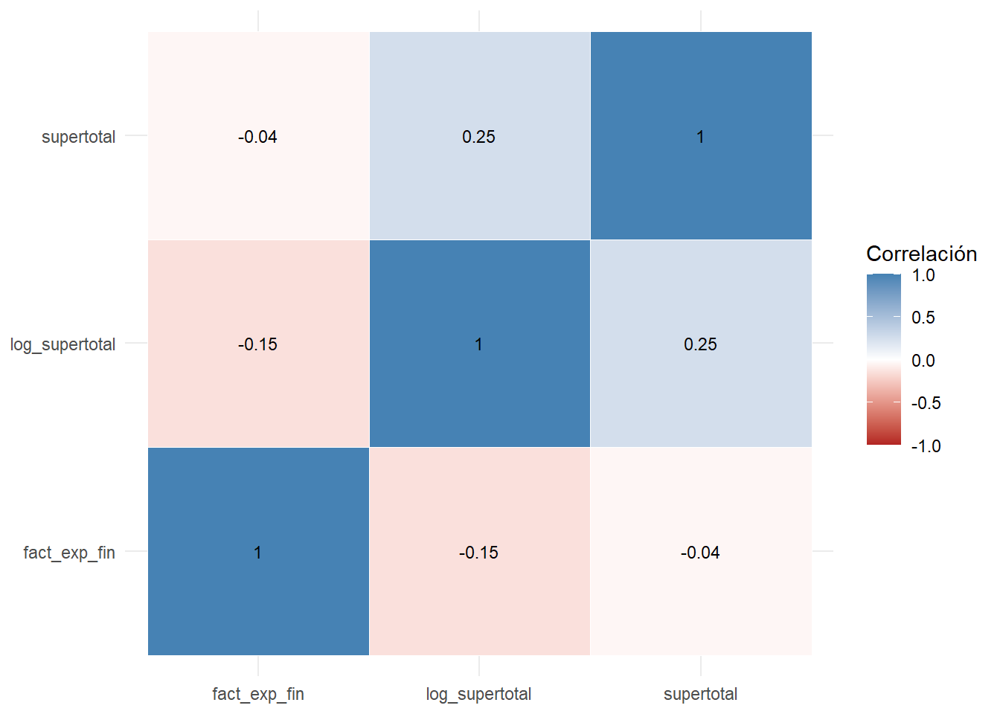
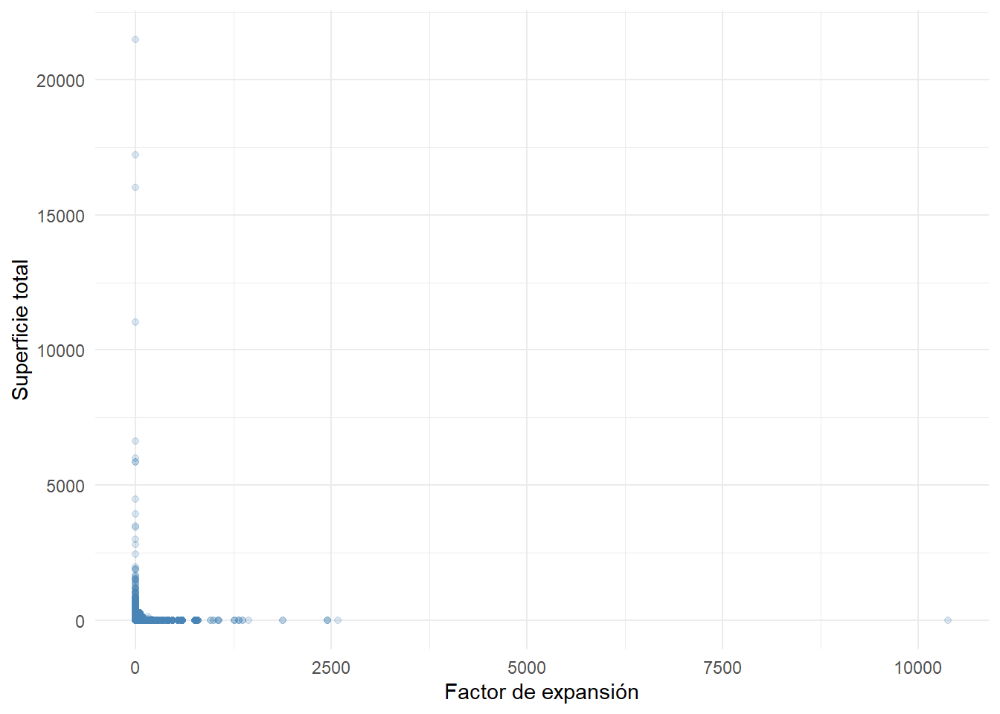
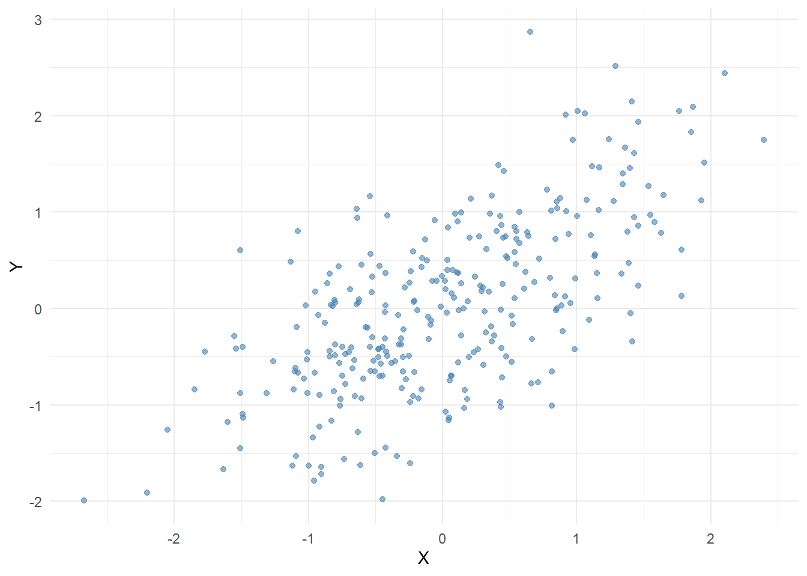
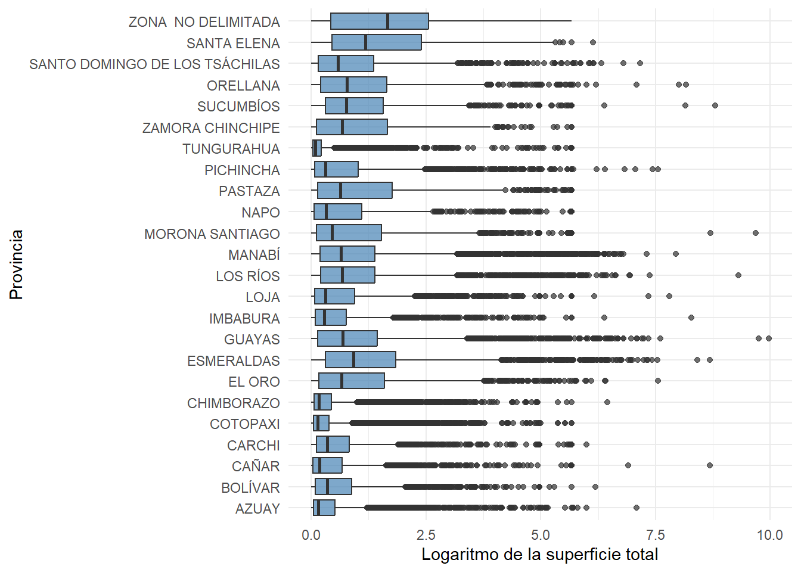
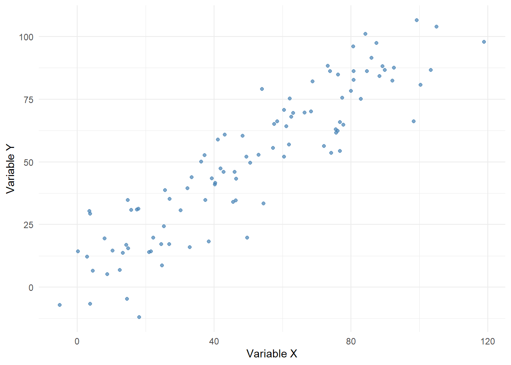

library(tidyverse)
library(ggplot2)
library(here)
library(knitr)22 Correlación, asociación y causalidad
22.1 Introducción
En el capítulo anterior estudiamos la asociación entre variables mediante gráficos y comparaciones descriptivas. Ahora avanzaremos hacia una medida numérica de esa asociación: la correlación.
La correlación permite resumir la dirección y la intensidad de la relación entre dos variables cuantitativas. Sin embargo, su interpretación requiere cautela, porque una correlación puede ser positiva, negativa o cercana a cero, y aun así no necesariamente representar una relación causal (Agresti & Finlay, 2018).
En esta sección trabajaremos con tres medidas: Pearson, Spearman y Kendall. Cada una responde a supuestos distintos y permite observar la asociación desde una perspectiva diferente (Kendall, 1938; Pearson, 1895; Spearman, 1904).
22.2 Cargando paquetes y base de trabajo
Cada capítulo debe poder renderizarse de forma independiente. Por ello cargamos nuevamente las librerías y la base analítica.
base_analitica <- readRDS(
here::here(
"datos",
"procesado",
"ESPAC_2025",
"sunac_transformado.rds"
)
)22.3 Preparando la base para correlaciones
Para este capítulo utilizaremos variables numéricas de la base. También construiremos nuevamente log_supertotal, ya que permite representar mejor la superficie total.
base_correlacion <- base_analitica |>
mutate(
log_supertotal =
log1p(
supertotal
)
) |>
select(
supertotal,
log_supertotal,
fact_exp_fin
)22.4 Estructura de la base
glimpse(
base_correlacion
)Rows: 84,538
Columns: 3
$ supertotal <dbl> 2.7616, 0.7581, 5.1941, 0.2862, 2.5763, 0.8191, 3.3235,…
$ log_supertotal <dbl> 1.324844399, 0.564233680, 1.823597226, 0.251692135, 1.2…
$ fact_exp_fin <dbl> 66.37009, 66.37009, 66.37009, 66.37009, 66.37009, 66.37…Interpretación
La base contiene tres variables numéricas. La variable supertotal representa la superficie original, log_supertotal corresponde a su transformación logarítmica y fact_exp_fin representa el factor de expansión.
22.5 ¿Qué mide la correlación?
La correlación mide qué tan relacionadas están dos variables cuantitativas.
Su valor se encuentra entre:
-1 y +1Un valor positivo indica que ambas variables tienden a moverse en la misma dirección. Un valor negativo indica que una variable tiende a aumentar cuando la otra disminuye. Un valor cercano a cero sugiere ausencia de asociación lineal clara.
22.6 Tabla de interpretación general
tibble(
Rango = c(
"Cercano a -1",
"Cercano a 0",
"Cercano a +1"
),
Interpretacion = c(
"Asociación negativa fuerte",
"Asociación lineal débil o inexistente",
"Asociación positiva fuerte"
)
) |>
kable(
caption = "Interpretación general del coeficiente de correlación"
)| Rango | Interpretacion |
|---|---|
| Cercano a -1 | Asociación negativa fuerte |
| Cercano a 0 | Asociación lineal débil o inexistente |
| Cercano a +1 | Asociación positiva fuerte |
Interpretación
Esta tabla ofrece una guía básica. La interpretación final depende del contexto sustantivo, del tamaño de la muestra y de la forma de la relación entre variables.
22.7 Covarianza
La covarianza indica si dos variables tienden a variar juntas. Si la covarianza es positiva, las variables tienden a moverse en la misma dirección. Si es negativa, tienden a moverse en direcciones opuestas.
covarianza <- cov(
base_correlacion$log_supertotal,
base_correlacion$fact_exp_fin,
use = "complete.obs"
)
tibble(
Medida = "Covarianza",
Valor = covarianza
) |>
kable(
digits = 4,
caption = "Covarianza entre superficie transformada y factor de expansión"
)| Medida | Valor |
|---|---|
| Covarianza | -8.0486 |
Interpretación
La covarianza indica la dirección de la relación, pero no es fácil de interpretar porque depende de las unidades de medida de las variables. Por esa razón se utiliza con mayor frecuencia la correlación.
22.8 Correlación de Pearson
La correlación de Pearson mide la asociación lineal entre dos variables cuantitativas (Pearson, 1895).
cor_pearson <- cor(
base_correlacion$log_supertotal,
base_correlacion$fact_exp_fin,
use = "complete.obs",
method = "pearson"
)
tibble(
Metodo = "Pearson",
Correlacion = cor_pearson
) |>
kable(
digits = 4,
caption = "Correlación de Pearson"
)| Metodo | Correlacion |
|---|---|
| Pearson | -0.1453 |
Interpretación
El coeficiente de Pearson resume la intensidad de la relación lineal entre log_supertotal y fact_exp_fin. Cuando dos variables independientes presentan una correlación superior a 0,80 en valor absoluto, puede existir un problema de multicolinealidad (Lalinde et al., 2018).
Cuando hay multicolinealidad:
- Los errores estándar de los coeficientes pueden aumentar.
- Los coeficientes pueden volverse inestables.
- La significancia individual de las variables puede reducirse.
- Es difícil interpretar el efecto individual de cada variable.
22.9 Visualización de Pearson
ggplot(
base_correlacion,
aes(
x = fact_exp_fin,
y = log_supertotal
)
) +
geom_point(
alpha = 0.20,
color = "steelblue"
) +
geom_smooth(
method = "lm",
se = TRUE,
color = "darkred"
) +
theme_minimal() +
labs(
x = "Factor de expansión",
y = "Logaritmo de la superficie total"
)
Interpretación
La línea permite observar la tendencia lineal promedio. Este gráfico complementa el coeficiente de Pearson.
22.10 Correlación de Spearman
La correlación de Spearman utiliza rangos en lugar de valores originales. Es útil cuando la relación es monotónica, pero no necesariamente lineal (Spearman, 1904).
cor_spearman <- cor(
base_correlacion$log_supertotal,
base_correlacion$fact_exp_fin,
use = "complete.obs",
method = "spearman"
)
tibble(
Metodo = "Spearman",
Correlacion = cor_spearman
) |>
kable(
digits = 4,
caption = "Correlación de Spearman"
)| Metodo | Correlacion |
|---|---|
| Spearman | -0.105 |
Interpretación
Spearman puede ser más adecuado cuando existen valores extremos o cuando la relación no sigue una forma estrictamente lineal.
22.11 Correlación de Kendall
La correlación de Kendall se basa en la comparación de pares concordantes y discordantes (Kendall, 1938).
cor_kendall <- cor(
base_correlacion$log_supertotal,
base_correlacion$fact_exp_fin,
use = "complete.obs",
method = "kendall"
)
tibble(
Metodo = "Kendall",
Correlacion = cor_kendall
) |>
kable(
digits = 4,
caption = "Correlación de Kendall"
)| Metodo | Correlacion |
|---|---|
| Kendall | -0.0699 |
Interpretación
Kendall suele entregar valores más conservadores. Es útil cuando se desea evaluar asociación ordinal o basada en rangos.
22.12 Comparación entre métodos
tibble(
Metodo = c(
"Pearson",
"Spearman",
"Kendall"
),
Correlacion = c(
cor_pearson,
cor_spearman,
cor_kendall
)
) |>
kable(
digits = 4,
caption = "Comparación entre coeficientes de correlación"
)| Metodo | Correlacion |
|---|---|
| Pearson | -0.1453 |
| Spearman | -0.1050 |
| Kendall | -0.0699 |
Interpretación
Si los tres coeficientes son similares, la asociación parece estable bajo diferentes criterios. Si difieren mucho, conviene revisar la forma de la relación, la presencia de valores extremos y la distribución de las variables.
22.13 Prueba de significancia para Pearson
Además de calcular el coeficiente, podemos evaluar si la correlación observada es estadísticamente distinta de cero.
prueba_pearson <- cor.test(
base_correlacion$log_supertotal,
base_correlacion$fact_exp_fin,
method = "pearson"
)
tibble(
Indicador = c(
"Correlación estimada",
"Valor p"
),
Valor = c(
as.numeric(
prueba_pearson$estimate
),
prueba_pearson$p.value
)
) |>
kable(
digits = 5,
caption = "Prueba de significancia de Pearson"
)| Indicador | Valor |
|---|---|
| Correlación estimada | -0.14533 |
| Valor p | 0.00000 |
Interpretación
El valor p permite evaluar si la correlación observada podría explicarse por azar bajo la hipótesis de correlación poblacional igual a cero, es decir, permite observar si dicha correlación es estadísticamente significativa.
22.14 Matriz de correlación
Cuando se analizan varias variables numéricas, es útil construir una matriz de correlación.
matriz_correlacion <- base_correlacion |>
cor(
use = "complete.obs",
method = "pearson"
)
round(
matriz_correlacion,
3
) |>
kable(
caption = "Matriz de correlación de Pearson"
)| supertotal | log_supertotal | fact_exp_fin | |
|---|---|---|---|
| supertotal | 1.000 | 0.252 | -0.040 |
| log_supertotal | 0.252 | 1.000 | -0.145 |
| fact_exp_fin | -0.040 | -0.145 | 1.000 |
Interpretación
La matriz permite observar simultáneamente las asociaciones entre todas las variables numéricas seleccionadas. Tal como se detalló anteriormente, se debe tener cuidado cuando las variables independientes presentan una correlación superior a 0,80 en valor absoluto, pues puede existir un problema de multicolinealidad. En ese caso, es aconsejable evaluar la exclusión de una de las variables altamente correlacionadas.
22.15 Preparando datos para un mapa de calor
Para visualizar la matriz de correlación con ggplot2, primero la convertimos a formato largo.
correlacion_larga <- matriz_correlacion |>
as.data.frame() |>
rownames_to_column(
"Variable_1"
) |>
pivot_longer(
cols =
-Variable_1,
names_to =
"Variable_2",
values_to =
"Correlacion"
)
correlacion_larga |>
head() |>
kable(
digits = 3,
caption = "Matriz de correlación en formato largo"
)| Variable_1 | Variable_2 | Correlacion |
|---|---|---|
| supertotal | supertotal | 1.000 |
| supertotal | log_supertotal | 0.252 |
| supertotal | fact_exp_fin | -0.040 |
| log_supertotal | supertotal | 0.252 |
| log_supertotal | log_supertotal | 1.000 |
| log_supertotal | fact_exp_fin | -0.145 |
Interpretación
El formato largo permite construir visualizaciones con ggplot2, manteniendo compatibilidad con HTML, Word y PDF.
22.16 Mapa de calor de correlaciones
ggplot(
correlacion_larga,
aes(
x = Variable_1,
y = Variable_2,
fill = Correlacion
)
) +
geom_tile(
color = "white"
) +
geom_text(
aes(
label =
round(
Correlacion,
2
)
),
size = 3
) +
scale_fill_gradient2(
low = "firebrick",
mid = "white",
high = "steelblue",
midpoint = 0,
limits = c(
-1,
1
)
) +
theme_minimal() +
labs(
x = NULL,
y = NULL,
fill = "Correlación"
)
Interpretación
El mapa de calor facilita la lectura de la matriz. Los colores permiten identificar rápidamente asociaciones positivas, negativas o cercanas a cero.
22.17 Correlación y valores extremos
La correlación puede verse afectada por valores extremos. Por ello conviene combinar medidas numéricas con visualizaciones.
ggplot(
base_correlacion,
aes(
x = fact_exp_fin,
y = supertotal
)
) +
geom_point(
alpha = 0.20,
color = "steelblue"
) +
theme_minimal() +
labs(
x = "Factor de expansión",
y = "Superficie total"
)
Interpretación
La variable supertotal presenta valores extremos importantes. Por eso la transformación logarítmica resulta más útil para visualizar e interpretar la relación.
22.18 Comparación con variable transformada
ggplot(
base_correlacion,
aes(
x = fact_exp_fin,
y = log_supertotal
)
) +
geom_point(
alpha = 0.20,
color = "steelblue"
) +
theme_minimal() +
labs(
x = "Factor de expansión",
y = "Logaritmo de la superficie total"
)Interpretación
La transformación permite observar mejor la distribución conjunta de las variables y reduce el efecto visual de los valores extremos.
22.19 Limitaciones de la correlación
La correlación tiene varias limitaciones:
- Resume asociación, no causalidad.
- Puede ocultar relaciones no lineales.
- Puede ser sensible a valores extremos.
- No identifica variables omitidas.
- No distingue mecanismos causales.
Por estas razones, la correlación debe interpretarse como una herramienta descriptiva y no como una prueba causal (Hernán & Robins, 2020).
22.20 Manos a la obra
Utilizando la base base_correlacion:
- Calcule la covarianza entre
log_supertotalyfact_exp_fin. - Calcule la correlación de Pearson.
- Calcule la correlación de Spearman.
- Calcule la correlación de Kendall.
- Compare los tres coeficientes.
- Construya una matriz de correlación.
- Elabore un mapa de calor con
ggplot2. - Compare la relación usando
supertotalylog_supertotal. - Explique por qué una transformación puede mejorar la lectura visual.
- Discuta por qué la correlación no demuestra causalidad.
22.21 Parte 3. Correlación no implica causalidad
22.22 Introducción
Una de las advertencias más importantes en investigación cuantitativa es que una asociación estadística no demuestra causalidad. Dos variables pueden estar correlacionadas y, aun así, no existir una relación causal directa entre ellas (Hernán & Robins, 2020; Pearl & Mackenzie, 2018).
En esta sección estudiaremos por qué ocurre esto y cómo pensar de manera más rigurosa sobre asociaciones, variables de confusión y causalidad.
22.23 Cargando paquetes y base de trabajo
library(tidyverse)
library(ggplot2)
library(here)
library(knitr)base_analitica <- readRDS(
here::here(
"datos",
"procesado",
"ESPAC_2025",
"sunac_transformado.rds"
)
)22.24 Preparando la base
base_causalidad <- base_analitica |>
mutate(
log_supertotal =
log1p(
supertotal
)
) |>
select(
supertotal,
log_supertotal,
fact_exp_fin,
tamano_upa,
provincia
)22.25 Asociación y causalidad
La asociación responde a la pregunta:
¿Dos variables se mueven juntas?La causalidad responde a una pregunta diferente:
¿Qué pasaría con Y si cambiáramos X?Esta diferencia es central en inferencia causal moderna (Hernán & Robins, 2020).
22.26 Comparación conceptual
tibble(
Concepto = c(
"Asociación",
"Causalidad"
),
Pregunta = c(
"¿Las variables se relacionan?",
"¿Qué ocurriría si intervenimos sobre una variable?"
),
Evidencia = c(
"Correlaciones, tablas y gráficos",
"Diseño de investigación, teoría y supuestos causales"
)
) |>
kable(
caption = "Diferencia entre asociación y causalidad"
)| Concepto | Pregunta | Evidencia |
|---|---|---|
| Asociación | ¿Las variables se relacionan? | Correlaciones, tablas y gráficos |
| Causalidad | ¿Qué ocurriría si intervenimos sobre una variable? | Diseño de investigación, teoría y supuestos causales |
Interpretación
La asociación puede observarse directamente en los datos. La causalidad requiere supuestos adicionales, diseño adecuado y una justificación teórica.
22.27 Variable de confusión
Una variable de confusión es aquella que se relaciona tanto con la variable explicativa como con la variable de resultado.
Para entenderlo mejor, supongamos que se desea evaluar el efecto del ejercicio físico sobre la presión arterial. La edad puede actuar como una variable de confusión, ya que las personas de mayor edad suelen realizar menos ejercicio y, al mismo tiempo, presentan una mayor probabilidad de padecer hipertensión. Si la edad no se incluye en el modelo, el efecto atribuido al ejercicio podría estar sobreestimado o subestimado.
Conceptualmente:
Z influye sobre X
Z influye sobre Y
X aparece asociado con YEsto puede generar una asociación que no representa un efecto causal directo.
22.28 Ejemplo simulado de confusión
set.seed(
123
)
datos_confusion <- tibble(
z = rnorm(
300
),
x =
0.8 * z +
rnorm(
300,
sd = 0.5
),
y =
0.8 * z +
rnorm(
300,
sd = 0.5
)
)
datos_confusion |>
head() |>
kable(
digits = 3,
caption = "Datos simulados con variable de confusión"
)| z | x | y |
|---|---|---|
| -0.560 | -0.806 | 0.089 |
| -0.230 | -0.560 | -0.198 |
| 1.559 | 0.778 | 1.230 |
| 0.071 | -0.470 | -0.702 |
| 0.129 | -0.115 | 0.499 |
| 1.715 | 1.538 | 1.267 |
Interpretación
En esta simulación, z afecta tanto a x como a y. Por tanto, puede aparecer una asociación entre x e y aunque no exista una relación causal directa entre ellas.
22.29 Asociación aparente
ggplot(
datos_confusion,
aes(
x = x,
y = y
)
) +
geom_point(
alpha = 0.6,
color = "steelblue"
) +
theme_minimal() +
labs(
x = "X",
y = "Y"
)
Interpretación
El gráfico muestra una asociación positiva entre x e y. Sin embargo, en la simulación esta asociación se debe a la variable z.
22.30 Correlación aparente
tibble(
Correlacion_XY =
cor(
datos_confusion$x,
datos_confusion$y
)
) |>
kable(
digits = 3,
caption = "Correlación aparente entre X e Y"
)| Correlacion_XY |
|---|
| 0.663 |
Interpretación
La correlación puede ser alta incluso cuando la asociación se explica por una tercera variable.
22.31 Diagramas causales simples
Los diagramas causales ayudan a representar supuestos sobre las relaciones entre variables (Pearl & Mackenzie, 2018).
Un ejemplo simple de confusión es:
Z → X
Z → YEn este caso, la asociación entre X e Y puede surgir porque ambas variables tienen una causa común.
22.32 Aplicación conceptual a la ESPAC
En la base ESPAC podríamos observar asociaciones entre:
provincia
tamano_upa
log_supertotalSin embargo, no debemos concluir automáticamente que una provincia causa determinada superficie. La provincia puede reflejar condiciones agroecológicas, estructura productiva, historia agraria, acceso a mercados u otros factores no observados.
22.33 Diferencias provinciales
ggplot(
base_causalidad,
aes(
x = provincia,
y = log_supertotal
)
) +
geom_boxplot(
fill = "steelblue",
alpha = 0.7
) +
coord_flip() +
theme_minimal() +
labs(
x = "Provincia",
y = "Logaritmo de la superficie total"
)
Interpretación
El gráfico muestra diferencias territoriales. Estas diferencias son descriptivas y no deben interpretarse como efectos causales de la provincia sobre la superficie.
22.34 Correlaciones espurias
Una correlación espuria ocurre cuando dos variables parecen relacionadas, pero la relación se debe a coincidencia, tendencia común, variables omitidas o mecanismos externos.
En investigación aplicada, las correlaciones espurias son frecuentes cuando se analizan muchas variables sin una hipótesis previa.
22.35 Ejemplo conceptual de correlación espuria
set.seed(
321
)
datos_espurios <- tibble(
tiempo = 1:100,
x =
tiempo +
rnorm(
100,
sd = 10
),
y =
tiempo +
rnorm(
100,
sd = 10
)
)
ggplot(
datos_espurios,
aes(
x = x,
y = y
)
) +
geom_point(
color = "steelblue",
alpha = 0.7
) +
theme_minimal() +
labs(
x = "Variable X",
y = "Variable Y"
)
Interpretación
Las variables x e y parecen asociadas, pero ambas comparten una tendencia común generada por tiempo.
22.36 Correlación espuria estimada
tibble(
Correlacion =
cor(
datos_espurios$x,
datos_espurios$y
)
) |>
kable(
digits = 3,
caption = "Correlación en ejemplo espurio"
)| Correlacion |
|---|
| 0.909 |
Interpretación
El coeficiente puede sugerir una asociación fuerte, aunque el patrón se debe a una tendencia compartida.
22.37 Preguntas para evaluar causalidad
Antes de interpretar una asociación como causal conviene preguntarse:
tibble(
Pregunta = c(
"¿Existe una teoría que justifique la relación?",
"¿La causa ocurre antes que el efecto?",
"¿Existen variables de confusión?",
"¿La relación se mantiene al controlar otros factores?",
"¿El diseño de investigación permite inferencia causal?"
)
) |>
kable(
caption = "Preguntas básicas antes de interpretar causalidad"
)| Pregunta |
|---|
| ¿Existe una teoría que justifique la relación? |
| ¿La causa ocurre antes que el efecto? |
| ¿Existen variables de confusión? |
| ¿La relación se mantiene al controlar otros factores? |
| ¿El diseño de investigación permite inferencia causal? |
Interpretación
Estas preguntas ayudan a evitar conclusiones apresuradas a partir de correlaciones simples.
22.38 Asociación en estudios observacionales
En estudios observacionales, el investigador no asigna tratamientos ni controla completamente las condiciones del estudio.
Por ello, la inferencia causal requiere especial cuidado (Angrist & Pischke, 2009).
En estos casos, las asociaciones pueden ser útiles para generar hipótesis, pero no siempre permiten establecer efectos causales.
22.39 Evidencia descriptiva y evidencia causal
tibble(
Tipo = c(
"Evidencia descriptiva",
"Evidencia causal"
),
Utilidad = c(
"Resume patrones observados",
"Evalúa efectos bajo supuestos causales"
),
Ejemplo = c(
"Comparar provincias",
"Estimar el efecto de una intervención"
)
) |>
kable(
caption = "Diferencia entre evidencia descriptiva y causal"
)| Tipo | Utilidad | Ejemplo |
|---|---|---|
| Evidencia descriptiva | Resume patrones observados | Comparar provincias |
| Evidencia causal | Evalúa efectos bajo supuestos causales | Estimar el efecto de una intervención |
Interpretación
La evidencia descriptiva es fundamental, pero no debe confundirse con evidencia causal.
22.40 Buenas prácticas
Para interpretar asociaciones de manera rigurosa se recomienda:
- Formular hipótesis antes de analizar.
- Justificar las variables con teoría.
- Revisar posibles variables de confusión.
- Evitar conclusiones causales basadas solo en correlaciones.
- Distinguir entre descripción, predicción y explicación causal.
- Reportar limitaciones del análisis.
22.41 Manos a la obra
Utilizando la base base_causalidad:
- Identifique una asociación entre dos variables.
- Explique por qué esa asociación no demuestra causalidad.
- Proponga una posible variable de confusión.
- Construya un gráfico descriptivo de la asociación.
- Redacte una interpretación no causal.
- Formule una pregunta causal relacionada.
- Dibuje un diagrama causal simple en texto.
- Explique qué información adicional necesitaría para inferir causalidad.
- Diferencie evidencia descriptiva y evidencia causal.
- Redacte una conclusión prudente basada en asociación.
22.42 Resumen del capítulo
En este capítulo estudiamos la diferencia entre asociación, correlación y causalidad.
En la primera parte analizamos asociaciones entre variables mediante gráficos y resúmenes descriptivos. En la segunda parte cuantificamos esas asociaciones mediante covarianza y coeficientes de correlación como Pearson, Spearman y Kendall. Finalmente, en esta tercera parte estudiamos por qué una correlación no implica causalidad, revisando variables de confusión, correlaciones espurias y preguntas básicas para evaluar relaciones causales.
El mensaje central es que la correlación es una herramienta descriptiva útil, pero no sustituye al diseño de investigación ni a la argumentación causal. Esta distinción será clave para los capítulos siguientes, donde se introducirá la regresión lineal simple y otros modelos estadísticos.